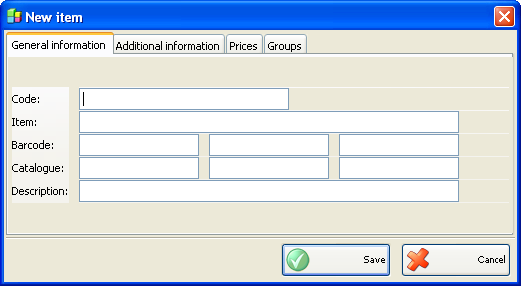
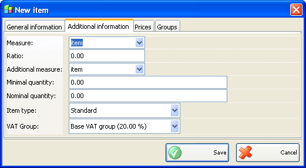
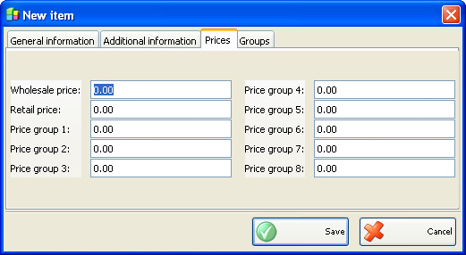
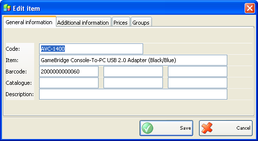
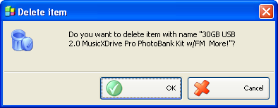

Adaugare, editare si stergere articole
Puteti adauga articole in lista de Articole in fereastra Articole noi.

Introduceti parametrii articolului in primul �tab� Informatii generale: cod, nume, cod de bare, catalog si descriere. Unui singur articol i se pot asocial pana la 3 coduri de bare si 3 numere de catalog .

Utilizati al doilea �tab� Informatii
aditionale pentru introducerea parametrilor aditionali ai articolului:
unitati de masura, proportie, unitate de masura aditionala, Cantitatea minima,
cantitatea nominala si tip articol. Campurile Unitate de masura si Unitate de masura aditionala contin
lista celor mai frecvente unitati de masura. Puteti introduce unitati de masura
diferite de cele din liste si vor fi automat adaugate in liste. Campul Proportie
determina corelatia dintre unitatea de masura de baza sic ea aditionala (ex.:
numarul de sticle dintr-o cutie sau numarul de corii dintr-o stiva.
In campul� Cantitate Minima
puteti introduce cantitatea critica pentru articolul respectiv.
Campul Tip Articol �determina cand articolul este standard sau are
pret fix. Asocierea TVA articolului cu pret fix este fixat pentru pretul de
desfacere in operatii de Achizitie sau Vanzare si nu depinde de grupa de pret
pentru parteneri. Selectarea unui tip de articol permite sa generati o raportare
�dupa tip�.

Al treilea �tab� al ferestrei Articol nou este Preturi. Se pot introduce preturi de vanzare a articolului: pret vanzare intreaga, pret desfacere, grup 1 pret, grup 2 pret, grup 3 pret, grup 4 pret, grup 5 pret, grup 6 pret, grup 7 pret si grup 8 pret.
Puteti edita toti parametruu in fereastra Editare Articol.

Pentru stergerea unui articol din lista, selectati linia corespunzatoare din lista (tabel) si click pe butonul Sterge sau apasati tasta� Delete.

Confirmati stergerea in partea de sus a ferestrei pentru a completa actiunea.
�2006-2012 Microinvest, All rights reserved